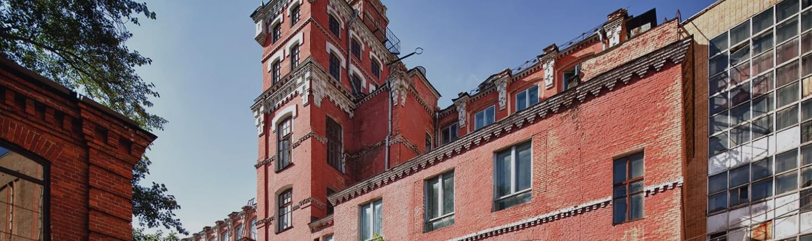

Креативные кластеры, фудкорты
и офисные пространства
За последние несколько лет лофт-кварталы успели стать точками притяжения для жителей Москвы: хипстерские кафе стали соседствовать с образовательными кластерами и офисными пространствами.
За последние несколько лет лофт-кварталы успели стать точками притяжения для жителей Москвы: хипстерские кафе стали соседствовать с образовательными кластерами и офисными пространствами. Как изменился рынок бывших мануфактур, кто и по каким причинам выбирает площадки с индустриальным прошлым для своего бизнеса, - рассказывает Иван Гуськов, генеральный директор Apollax Space
Коротко о мануфактурах
Бывшие фабрики и промышленные районы в начале 2000-х годов стали превращаться в пространства для бизнеса, когда острый дефицит офисных площадей в центре Москвы заставил девелоперов обратить внимание на пустующие и заброшенные индустриальные здания. Многие из них были построены в конце XIX — начале ХХ века и функционировали до развала СССР, но не пережили Перестройки. Первые мануфактуры были реконструированы в 2005–2007 годах, процесс редевелопмента продолжается до сих пор: заводские территории становятся многофункциональными пространствами с богатой инфраструктурой, экологичным дизайном интерьеров, и при этом зачастую сохраняют исторический вид.
Сейчас можно говорить о том, что началась вторая эпоха городских мануфактур
Бывшие фабрики и промышленные районы в начале 2000-х годов стали превращаться в пространства для бизнеса, когда острый дефицит офисных площадей в центре Москвы заставил девелоперов обратить внимание на пустующие и заброшенные индустриальные здания.
Бывшие фабрики и промышленные районы в начале 2000-х годов стали превращаться в пространства для бизнеса, когда острый дефицит офисных площадей в центре Москвы заставил девелоперов обратить внимание на пустующие и заброшенные индустриальные здания.
Офисы и коворкинги на мануфактурах
Бывшие фабрики и промышленные районы в начале 2000-х годов стали превращаться в пространства для бизнеса, когда острый дефицит офисных площадей в центре Москвы заставил девелоперов обратить внимание на пустующие и заброшенные индустриальные здания. Многие из них были построены в конце XIX — начале ХХ века и функционировали до развала СССР, но не пережили Перестройки. Первые мануфактуры были реконструированы в 2005–2007 годах, процесс редевелопмента продолжается до сих пор: заводские территории становятся многофункциональными пространствами с богатой инфраструктурой, экологичным дизайном интерьеров, и при этом зачастую сохраняют исторический вид.
Офисы и коворкинги на мануфактурах
Бывшие фабрики и промышленные районы в начале 2000-х годов стали превращаться в пространства для бизнеса, когда острый дефицит офисных площадей в центре Москвы заставил девелоперов обратить внимание на пустующие и заброшенные индустриальные здания. Многие из них были построены в конце XIX — начале ХХ века и функционировали до развала СССР, но не пережили Перестройки. Первые мануфактуры были реконструированы в 2005–2007 годах, процесс редевелопмента продолжается до сих пор: заводские территории становятся многофункциональными пространствами с богатой инфраструктурой, экологичным дизайном интерьеров, и при этом зачастую сохраняют исторический вид.
Бывшие фабрики и промышленные районы в начале 2000-х годов стали превращаться в пространства для бизнеса, когда острый дефицит офисных площадей в центре Москвы заставил девелоперов обратить внимание на пустующие и заброшенные индустриальные здания. Многие из них были построены в конце XIX — начале ХХ века и функционировали до развала СССР, но не пережили Перестройки. Первые мануфактуры были реконструированы в 2005–2007 годах, процесс редевелопмента продолжается до сих пор: заводские территории становятся многофункциональными пространствами с богатой инфраструктурой, экологичным дизайном интерьеров, и при этом зачастую сохраняют исторический вид.